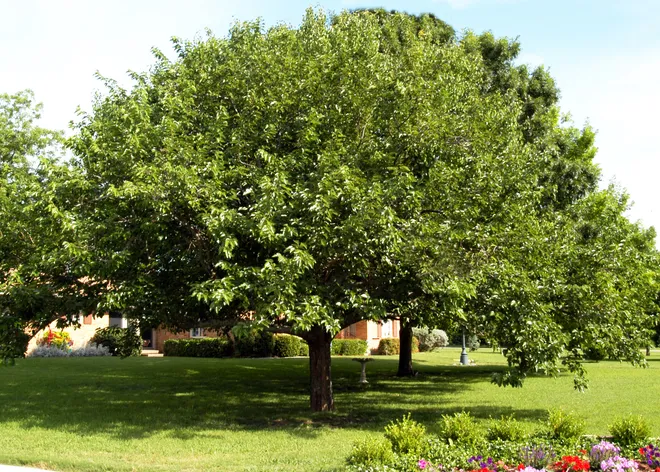
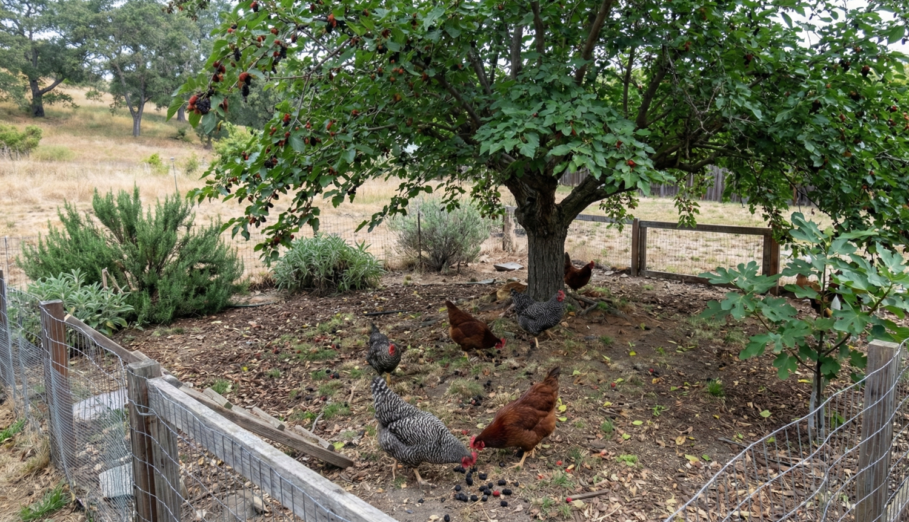
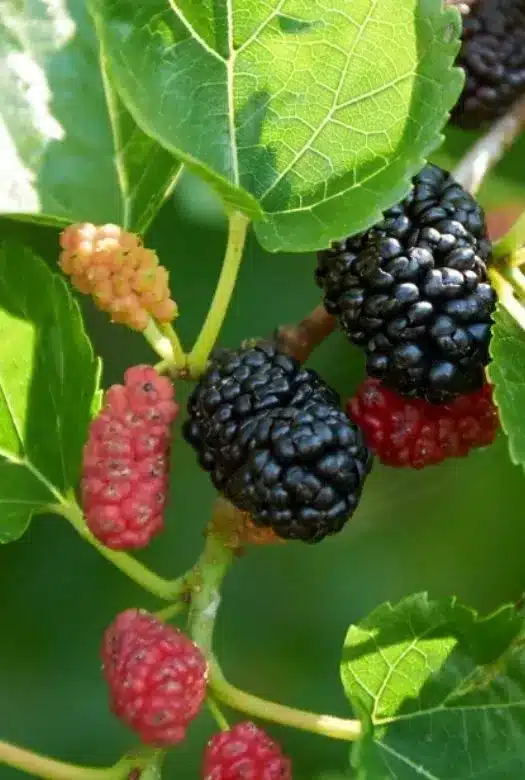

Can Chickens Eat Mulberries and Mulberry Leaves?
Yes. Chickens can eat ripe mulberries and clean mulberry leaves as supplemental foods. Ripe fruit can provide seasonal treats and natural foraging, while tender leaves can be offered fresh or properly dried. A well-placed mulberry tree may also provide shade, insects, leaf litter, and long-term enrichment for a backyard flock.
Jump to feeding mulberries and mulberry leaves → | Jump to growing a mulberry tree for chickens →
✅ Quick Answers About Mulberries and Mulberry Leaves for Chickens
Mulberries and mulberry leaves can provide useful seasonal variety, but every form should remain supplemental to an age-appropriate complete poultry ration.
| Question | Answer |
|---|---|
| Can chickens eat ripe mulberries? | Yes. Offer ripe, sound fruit in moderation. |
| Can chickens eat fallen mulberries? | Yes. They should still be fresh, clean, and free from mold or fermentation. |
| Can chickens eat fresh mulberry leaves? | Yes. Tender young leaves are generally easier to consume than older, tougher foliage. |
| Can chickens eat dried mulberry leaves? | Yes. The leaves must be dried thoroughly and stored without moisture, mold, insects, or rodents. |
| Can chickens eat frozen mulberries? | Yes. Thaw plain fruit and avoid sugar, syrup, alcohol, or other added ingredients. |
| Can chickens eat mulberry branches or bark? | Not as feed. Chickens may strip leaves from a safe leafy branch, but wood and bark are not intended as food. |
| Can mulberries replace complete chicken feed? | No. Neither the fruit nor leaves provide complete poultry nutrition. |
Soft fallen mulberries can mold or ferment quickly in warm weather. Do not feed fruit that is sour, rotten, leaking, moldy, chemically contaminated, or foul smelling.
🌳 Can Chickens Eat Mulberries and Mulberry Leaves?
Yes. Chickens can eat ripe, sound mulberries and clean mulberry leaves as supplemental foods. Fresh fruit, naturally fallen ripe berries, tender leaves, wilted leaves, and properly dried leaves may all be offered in moderation while an age-appropriate complete poultry ration remains the flock’s primary food.
Ripe mulberries provide moisture, natural sugars, seasonal variety, and opportunities for natural foraging. Chickens may pick fruit directly from low branches or gather beneath a managed tree as berries fall.
Mulberry leaves provide a different type of supplemental value. Young leaves are generally more tender and easier for chickens to consume than older leaves, mature stems, bark, or woody branches.
Can Chickens Eat Mulberry Leaves?
Yes. Chickens can eat clean, tender mulberry leaves as supplemental forage. Young leaves are generally easier to consume than older, tougher foliage, while woody stems, branches, and bark are not intended as feed.
Can Chickens Eat Fallen Mulberries?
Yes, if the fruit is still fresh and sound. Chickens can eat ripe mulberries that fall naturally from the tree, but berries that become moldy, sour, rotten, leaking, or fermented should be removed and discarded.
Safe Forms of Mulberry for Chickens
- Fresh ripe fruit: Offer sound berries as a seasonal supplemental food.
- Fresh fallen fruit: Allow chickens to forage beneath the tree while the berries remain clean and unspoiled.
- Frozen and thawed fruit: Plain frozen mulberries may be thawed and offered without sugar, syrup, alcohol, sauces, or other added ingredients.
- Plain dried mulberries: Offer only occasionally because dried fruit is more concentrated in natural sugar and energy than fresh fruit.
- Fresh tender leaves: Offer clean leaves or young leafy shoots in modest quantities.
- Wilted leaves: Clean leaves may be allowed to wilt briefly before feeding.
- Properly dried leaves: Leaves may be dried thoroughly and stored for later supplemental use.
- Crumbled dried leaf material: Fully dried leaves may be crumbled into manageable supplemental portions.
- Leafy branches: A safe branch may be positioned where chickens can strip the leaves, provided it does not create a sharp, falling, or entanglement hazard.
Mulberry fruit is moisture rich and contains natural sugars, while the leaves provide fiber, plant compounds, minerals, and variable protein. Neither the fruit nor leaves provide the complete energy, amino-acid, calcium, vitamin, and mineral balance chickens require.
🍇 Mulberry Fruit Versus Leaves: What Can Chickens Safely Eat?
One reason mulberry can be valuable around a backyard flock is that more than one part of the tree may be useful. The fruit and leaves serve different purposes, however, and should not be treated as interchangeable feeds.
| Part of the Tree | Safe for Chickens? | Best Use | Important Limitation |
|---|---|---|---|
| Ripe mulberries | ✅ Yes | Seasonal treat and natural foraging enrichment | High moisture and natural sugar; excessive intake may reduce complete-feed consumption |
| Fresh fallen fruit | ✅ Yes | Managed foraging beneath the tree | Must remain fresh, clean, and free from mold or fermentation |
| Frozen and thawed fruit | ✅ Yes | Occasional use outside the fresh-fruit season | Use only plain fruit without sweeteners, syrup, alcohol, or sauces |
| Plain dried mulberries | ✅ In moderation | Occasional concentrated treat | More concentrated in sugar and energy than fresh fruit |
| Fresh tender leaves | ✅ Yes | Supplemental leafy forage | Older leaves and stems become tougher and more fibrous |
| Properly dried leaves | ✅ Yes | Stored supplemental forage | Must be fully dry and protected from moisture, mold, insects, and rodents |
| Young tender shoots | ✅ In moderation | Occasional browse from a healthy untreated tree | Woody growth is not a meaningful poultry feed |
| Moldy or fermented fruit | ❌ No | Remove and discard | May create spoilage, sanitation, and flock-health concerns |
| Moldy, damp, or musty leaves | ❌ No | Remove and discard | Questionable forage should never be fed |
| Branches, bark, and wood | ❌ Not feed | Shade, structure, leaf support, or habitat | May create sharp, falling, or entanglement hazards |
Fruit is primarily a moisture-rich seasonal food, while leaves are more concentrated in fiber, minerals, and protein on a dry-matter basis. Using both forms appropriately is more useful than treating either one as a complete feed ingredient.

🐔 How to Safely Feed Mulberries and Mulberry Leaves to Chickens
A mature mulberry tree may provide seasonal fruit, tender leaves, shade, insects, leaf litter, and natural foraging opportunities. The fruit and leaves should remain supplemental while complete poultry feed provides the flock’s primary nutrition.
Feeding Fresh Mulberries
Fresh ripe fruit may be offered by hand, placed in a clean feeder, scattered in a managed foraging area, or allowed to fall naturally beneath the tree.
- Offer only ripe, sound fruit.
- Remove moldy, rotten, leaking, sour, or foul-smelling berries.
- Avoid allowing crushed fruit to accumulate in deep wet layers.
- Move feeders and waterers outside the heaviest fruit-drop area.
- Continue providing complete poultry feed during the fruiting season.
- Reduce access when birds are ignoring their balanced ration.
Feeding Fresh Mulberry Leaves
Tender young leaves may be cut and carried to the flock or offered on a safe leafy branch. Chickens commonly select the softer leaf material while leaving coarse stems and woody growth.
- Harvest only from a correctly identified tree.
- Use leaves from trees that have not been exposed to unsafe chemical treatments.
- Avoid roadside trees where contamination may be unknown.
- Select healthy foliage without mold, heavy spotting, decay, or insect contamination.
- Begin with small portions and observe flock acceptance.
- Allow the tree enough remaining foliage and recovery time.
Feeding Dried Mulberry Leaves
Properly dried leaves are more concentrated than fresh leaves and should be introduced gradually. They may be offered whole, broken into smaller pieces, or crumbled into a measured supplemental portion.
- Begin with a small amount of ripe fruit or tender leaves.
- Observe whether the flock continues eating its complete ration normally.
- Remove wet or uneaten material before spoilage begins.
- Increase only when the flock accepts the supplement without creating waste.
- Treat dried leaves and dried fruit as more concentrated than their fresh forms.
Processed mulberry leaf meal has been studied in poultry nutrition, but research diets are formulated and balanced as complete rations. Published inclusion levels should not be applied directly to unbalanced home feeding.
👀 What Chicken Keepers May Notice During Mulberry Season
Reports from backyard flock owners commonly describe chickens becoming highly interested in a fruiting mulberry tree once ripe berries begin to fall. These practical observations are useful for management, although individual flock behavior and tree production will vary.
- Chickens may gather beneath the canopy. Once birds recognize the fruit, they may begin checking beneath the tree regularly.
- Low branches may receive heavy attention. Accessible fruit and tender leaves may be stripped quickly.
- Fruit can disappear almost as soon as it falls. A small flock may keep up with light production but not with a heavily bearing mature tree.
- Droppings may become wetter or darker. Heavy consumption of moisture-rich, darkly pigmented fruit may temporarily change the appearance of manure.
- Staining can spread beyond the tree. Dark fruit may stain footwear, feeders, waterers, coop surfaces, paving, and outdoor furniture.
- Fruit may accumulate during peak production. When berries fall faster than the flock consumes them, flies, ants, yellow jackets, rodents, fermentation, and mold become more likely.
- The shade may become as valuable as the food. A mature canopy may provide a comfortable resting area during hot weather.
- Fallen fruit may attract insects. Chickens may forage for both the berries and the invertebrates drawn to the fruit and leaf litter.
Regular cleanup, appropriate tree placement, protected feeders and waterers, and continued access to complete feed usually matter more than preventing chickens from eating every ripe berry.
🌳 Why Grow a Mulberry Tree for Chickens?
Many homegrown feed crops produce for one growing season and must be planted again the following year. A healthy mulberry tree is different. Once established, it may provide fruit, leafy forage, shade, wildlife habitat, and natural enrichment for many years.
Mulberry should not be viewed as a replacement for complete poultry feed. Its value comes from combining several useful functions in one perennial plant.
🍇 Seasonal Fruit
Ripe berries provide moisture, natural sugars, seasonal variety, and natural pecking and foraging opportunities.
🥬 Leafy Forage
Tender leaves may be offered fresh, wilted, or properly dried as supplemental forage.
🌳 Summer Shade
A mature canopy may provide a cooler resting and foraging area during warm weather.
🐛 Natural Enrichment
Fruit drop, insects, leaf litter, low branches, and seasonal changes encourage scratching, pecking, and exploration.
♻️ Long-Term Production
One suitable planting may remain useful for many years without annual seed purchases or replanting.
🏡 Multipurpose Landscape Value
A properly located tree may serve poultry, people, wildlife, pollinators, and the wider backyard landscape.
If you have enough space for one carefully selected perennial feed tree, mulberry deserves serious consideration.
Its greatest value is not any single fruit or leaf harvest. It is the combination of seasonal food, shade, habitat, enrichment, and long productive life.
🏡 Is a Mulberry Tree Right for Your Backyard Flock?
Mulberry can be an excellent long-term crop, but the correct decision depends on available space, mature tree size, climate, cultivar, invasive-species concerns, fruit-drop management, and how long you expect to use the property.
| Situation | General Rating | Why | Main Caution |
|---|---|---|---|
| Beginning chicken keeper | ★★★★★ | The tree may require relatively little annual work after establishment. | Cultivar selection and planting location must be planned carefully. |
| Small backyard | ★★★☆☆ to ★★★★☆ | A compact cultivar or maintained shrub form may provide fruit and leaves. | Full-sized trees may outgrow the available space. |
| Large property | ★★★★★ | There is more room for mature canopy, roots, fruit drop, and cleanup access. | Wildlife pressure and unwanted seedlings may increase. |
| Hot climate | ★★★★★ | A mature canopy may provide valuable summer shade and a long leaf-growing season. | Water may be required during establishment and drought. |
| Cold climate | ★★★☆☆ to ★★★★☆ | Cold-hardy cultivars may perform well when suited to the region. | Hardiness differs substantially among species and cultivars. |
| Low annual replanting preference | ★★★★★ | An established perennial tree does not require yearly sowing. | The initial establishment period is longer than for annual crops. |
| Immediate feed production | ★★☆☆☆ | Leaves may eventually provide repeated harvests. | Young trees require time to establish before meaningful fruit or leaf harvest. |
| Feed-cost reduction | ★★★☆☆ to ★★★★☆ | Fruit and leaves may replace some purchased treats or supplemental forage. | The tree cannot replace a balanced complete ration. |
| Long-term homestead | ★★★★★ | The tree may provide decades of multipurpose value. | Its mature footprint becomes a permanent part of the property. |
| Paved or highly finished yard | ★★☆☆☆ | A carefully located compact cultivar may still be possible. | Dark fruit may stain vehicles, walkways, patios, furniture, and buildings. |
A young nursery plant may appear easy to place, but the mature canopy, root zone, fruit-drop area, pruning access, and distance from structures should guide the final planting decision.
Is Mulberry Right for Your Flock and Property?
Whether mulberry is practical depends on more than whether chickens can eat it. Climate, available space, sunlight, soil, water, mature tree size, labor, containment concerns, harvest goals, and long-term property plans all affect whether it is a strong choice.
🌱 Use the Feed Crop Planner →🌿 Where Mulberry Fits in a Backyard Feed Garden
Mulberry fills a role that few annual feed crops can provide. Rather than producing for only one season, it becomes part of the permanent structure of the property and complements annual grains, greens, legumes, and storage crops.
The tree’s contribution changes throughout the year. Leaves, fruit, shade, insects, leaf litter, and dormant pruning all create different opportunities for the flock and the gardener.
| Season | Mulberry’s Role | Practical Management |
|---|---|---|
| Spring | New leaves emerge and begin providing potential leafy forage. | Inspect winter damage, complete necessary structural pruning, protect new growth, and maintain establishment watering. |
| Early summer | Rapid shoot and leaf growth may support light controlled harvesting. | Avoid removing excessive foliage from young or weak trees. |
| Fruiting season | Ripe berries provide seasonal food and natural foraging beneath the canopy. | Monitor fruit drop, remove spoiled berries, and protect feeders and waterers from contamination. |
| Hot summer weather | The canopy may provide shade, cooler soil, insects, and a resting area. | Watch for crowding, damp ground, flies, rodents, and excessive manure buildup beneath popular shade areas. |
| Late summer | Leaf harvest may continue where the tree remains healthy and actively growing. | Allow adequate recovery before dormancy and reduce harvest during drought or visible stress. |
| Fall | Leaves fall and contribute litter, organic matter, and scratching material. | Remove diseased material and prevent wet leaf piles from accumulating around feeders or enclosed areas. |
| Winter | The dormant tree provides no fresh feed but may be easier to inspect and prune. | Plan structural pruning, evaluate tree size, repair guards, and review the previous season’s fruit-drop and cleanup demands. |
Many backyard chicken keepers combine mulberry with annual crops such as sunflower, pumpkin and winter squash, field corn, kale and collards, cowpeas, or millet. The tree supplies long-term seasonal value while annual crops fill shorter harvest windows and different nutritional roles.
Its strongest contribution is not a single crop of berries. It is the repeated combination of leaves, fruit, shade, habitat, enrichment, and reduced annual replanting.
📋 Mulberry Quick Facts
⭐ Backyard Chicken Planner Ratings
Every feed crop has strengths and trade-offs. These ratings summarize how mulberry may perform for an average backyard flock when the tree is properly selected, planted, and managed.
Few backyard feed crops combine edible fruit, usable leaves, shade, insect activity, seasonal enrichment, human food, and decades of potential production in one planting.
Its ratings are lower for immediate results and small-space use because trees require establishment time and may eventually occupy a large permanent footprint.
🌱 Which Mulberry Tree Should You Grow for Chickens?
Species and cultivar choice is one of the most important decisions in the entire project. Mature size, cold tolerance, fruit quality, growth habit, leaf production, invasive potential, and time to bearing can differ substantially.
Do not purchase a mulberry tree based only on a nursery photograph or the color shown on the plant tag. Confirm the exact cultivar whenever possible.
Red Mulberry
Red mulberry, Morus rubra, is native to eastern North America.
It may develop into a substantial tree and can be worth considering where verified native stock is available and suited to the local climate and site.
Potential advantages- Native ecological value in appropriate regions
- Edible fruit
- Shade and wildlife habitat
- Compatibility with long-term homestead plantings
- May become a large tree
- True native stock may be difficult to verify
- Hybridization with white mulberry complicates identification
White Mulberry
White mulberry, Morus alba, has a long history of cultivation for silkworm production, fruit, and livestock forage.
It is widely naturalized and may be invasive or ecologically problematic in parts of North America.
Potential advantages- Rapid growth
- Strong leaf production
- Many fruiting and fruitless cultivars
- Wide adaptability
- May spread by seed
- Can hybridize with native red mulberry
- Some regions discourage or restrict planting
- Seedlings may be highly variable
Black Mulberry
Black mulberry, Morus nigra, is often valued for richly flavored fruit.
Cold tolerance, availability, growth rate, and regional adaptation should be confirmed before purchase.
Potential advantages- High-quality edible fruit
- May remain smaller than some vigorous white mulberries
- Useful for people and poultry
- May be less cold hardy
- True species identification can be difficult
- Availability varies by region
Named Hybrids and Cultivars
Named cultivars may be selected for fruit quality, compact growth, cold tolerance, long harvest, heavy production, or specific management systems.
Potential advantages- More predictable mature size
- Known fruit color and quality
- Earlier or more dependable bearing
- Possible suitability for pruning or container culture
- Nursery labels are not always reliable
- Regional hardiness may differ from advertising claims
- A cultivar suited to one climate may perform poorly in another
White mulberry has escaped cultivation across much of North America and can hybridize with native red mulberry.
A locally appropriate native species, named noninvasive cultivar, sterile selection, or carefully managed hybrid may be a better choice depending on your region.
🍇 Fruit Color Does Not Reliably Identify the Species
The names white mulberry, red mulberry, and black mulberry do not guarantee the color of ripe fruit.
Depending on the species and cultivar, ripe berries may be:
- White
- Cream
- Pink
- Red
- Lavender
- Dark purple
- Nearly black
Fruit color should therefore not be used as the only method of identifying a tree.
A named cultivar provides a better chance of knowing the mature size, fruiting habit, cold tolerance, expected fruit quality, and ecological concerns before the tree becomes permanent.
🌿 Fruiting Versus Fruitless Mulberry Trees
Some mulberries are sold specifically as fruitless landscape trees. They may still provide leaves and shade, but they do not provide the seasonal berry crop that makes mulberry especially attractive for chickens.
| Tree Type | Potential Value | Important Limitation | Best Fit |
|---|---|---|---|
| Named fruiting cultivar | Fruit, leaves, shade, human food, and enrichment | Fruit may stain, attract wildlife, ferment, and create cleanup work | Keepers who want predictable fruit production |
| Fruitless cultivar | Leaves, shade, structure, and possible forage pruning | No berry crop; some male trees may produce substantial pollen | Areas where fruit drop would be unacceptable |
| Seed-grown tree | Low purchase cost and genetic diversity | Sex, fruiting habit, fruit quality, mature size, and time to bearing may be unpredictable | Experimental plantings with ample space |
| Grafted or cutting-grown cultivar | More predictable fruit and growth characteristics | Usually costs more than a seedling | Most backyard keepers seeking dependable results |
| Compact or dwarf selection | Easier pruning, harvesting, and bird protection | May produce less total shade or fruit than a full-sized tree | Smaller properties or managed orchard systems |
| Forage hedge or coppice planting | Repeated accessible leaf production | Requires more plants, protection during regrowth, and repeated cutting | Keepers prioritizing leaves over fruit |
Choose one named fruiting cultivar with documented mature size, cold tolerance, growth habit, and regional suitability. Confirm that the tree is legally and ecologically appropriate before planting.
🗓 When to Plant Mulberry
Dormant bare-root trees are commonly planted in late winter or early spring. Container-grown trees may be planted over a broader period when the soil is workable, extreme heat is absent, and dependable water is available.
Local climate and plant condition matter more than a single national planting date.
| Region | General Planting Approach | Growth and Harvest Pattern | Primary Concern |
|---|---|---|---|
| Cold North | Plant a cold-hardy cultivar in spring after severe freeze risk declines. | Spring and summer leaf growth; fruit maturity depends on cultivar and season length. | Winter hardiness and late frost damage |
| Midwest and Northeast | Plant dormant stock in early spring or container stock during mild weather. | Fruit often ripens from late spring through summer. | Species choice, drainage, and invasive white mulberry |
| Upper South | Plant from late fall through early spring while the tree is dormant and soil remains workable. | Strong spring growth and fruit commonly during late spring or early summer. | Summer establishment heat and fruit-drop management |
| Deep South | Plant during the cool season and avoid severe establishment heat. | Earlier fruiting may occur, with leaf growth extending through a long season. | Heat, drought, disease pressure, and rapid growth |
| Southwest | Plant during mild weather with dependable irrigation. | Growth depends strongly on water availability and heat tolerance. | Water demand, sunscald, and establishment stress |
| Pacific Northwest | Plant in spring or fall where drainage is suitable. | Fruit maturity may be more dependable in warmer inland or protected locations. | Cool summers and wet soil |
| Coastal West | Plant during cool, moist weather. | Mild climates may support long growth, although cool summers can affect ripening. | Cultivar suitability and fruit maturity |
A newly planted tree has limited roots and is more vulnerable to severe heat, drought, frozen soil, waterlogging, and drying winds than an established mulberry.
📐 How Much Space Does a Mulberry Tree Need?
Mulberries range from compact shrubs and small managed cultivars to trees approximately 30–60 feet tall or larger. The amount of space required depends on the exact species, cultivar, rootstock, climate, soil, and pruning system.
Do not choose a planting location based only on the size of the young nursery tree. Plan for the mature canopy, trunk, root zone, fruit-drop area, harvesting access, cleanup needs, and long-term pruning.
Factors That Affect Mulberry Size
- Species and cultivar
- Rootstock
- Regional climate
- Soil depth and fertility
- Water availability
- Whether the plant is maintained as a tree, shrub, hedge, coppice, or pollard
- Pruning frequency and severity
- Whether fruit or leaf production is the primary goal
| Management Form | Typical Space Demand | Primary Benefit | Main Limitation |
|---|---|---|---|
| Full-sized fruit tree | Large permanent footprint | Maximum shade, fruit, habitat, and long-term landscape value | Fruit and leaves may become difficult to reach |
| Compact or dwarf cultivar | Moderate footprint | Easier harvesting, pruning, cleanup, and bird protection | May produce less total shade and fruit |
| Pruned small tree | Moderate footprint with regular maintenance | Balances fruit production, shade, and harvest access | Requires dependable pruning over many years |
| Pollarded tree | Moderate permanent trunk footprint | Produces repeated young shoots and accessible leaf harvest | Requires consistent repeated cutting and sound branch management |
| Coppiced plant | Wide low regrowth area | Accessible leafy shoots and renewable forage biomass | New growth must be protected from browsing during recovery |
| Forage hedge | Linear planting area | Repeated cut-and-carry leaf production | Requires multiple plants and regular maintenance |
| Large container | Small ground footprint | May help control size and simplify placement | Restricted roots, greater watering demand, and limited long-term production |
A full-sized fruit tree, compact cultivar, pollarded specimen, container plant, and forage hedge cannot be represented accurately by one spacing number. Choose spacing based on the final management system and the documented mature size of the exact cultivar.
🏡 Choosing the Best Planting Location
Mulberry location affects nearly every later management issue, including shade, fruit access, staining, cleanup, root conflict, wildlife pressure, and whether chickens can safely forage beneath the tree.
A Strong Mulberry Site Usually Provides
- Full sun or strong direct sunlight
- Well-drained soil
- Enough room for the mature canopy and roots
- Access for pruning and harvesting
- A surface beneath the tree that can tolerate falling fruit
- A way to remove excess fruit and leaf litter
- Protection for the young trunk and roots
- Distance from structures, utilities, and sensitive surfaces
Avoid Planting Directly Beside
- Foundations
- Septic tanks and drain fields
- Underground utilities
- Driveways
- Patios and decks
- Vehicles
- Swimming pools
- Light-colored paving
- Rooflines and gutters
- Narrow walkways
- Property boundaries where fruit drop or seedlings may create conflict
Dark-fruited cultivars may stain pavement, coop surfaces, outdoor furniture, footwear, clothing, feeders, and waterers. A grassed, mulched, or soil-covered area is usually easier to manage than a paved surface.
Plant near enough to the chicken area for future shade and controlled access, but not directly over permanent feeders, waterers, roofs, electrical equipment, or surfaces that would be difficult to clean.
🪴 How to Plant a Mulberry Tree
Correct planting depth and early root care are more important than adding large amounts of fertilizer or heavily amending the planting hole.
- Confirm the species and cultivar. Verify the mature size, fruiting status, cold tolerance, growth habit, and invasive status before planting.
- Inspect the roots. Remove damaged container material, loosen circling roots carefully, and keep bare roots from drying during planting.
- Choose a sunny, well-drained location. Full sun usually supports the strongest fruit production and sturdy growth.
- Dig a broad planting hole. Make the hole wider than the root system but no deeper than necessary.
- Locate the root flare. The point where the trunk widens into the main roots should remain at or slightly above the final soil level.
- Place the tree at the correct depth. Do not bury the trunk or place the root flare deep below the surrounding soil.
- Backfill primarily with native soil. Avoid creating a heavily amended pocket that may hold excess water or discourage roots from expanding outward.
- Water thoroughly. Settle soil around the roots and remove large air spaces without compacting the soil excessively.
- Apply mulch over the root zone. Use a broad layer of mulch while keeping it several inches away from the trunk.
- Protect the trunk. Install a suitable guard where chickens, deer, rodents, dogs, equipment, or string trimmers may damage the bark.
- Stake only when necessary. A stable tree usually develops stronger trunk movement without rigid staking. Where staking is required, use flexible supports and remove them when the tree is established.
- Water consistently during establishment. Monitor the soil rather than relying only on rainfall estimates.
A buried root flare can contribute to poor root development, trunk decay, reduced oxygen around the roots, and long-term decline.
💧 Watering Mulberry Trees
Young trees require dependable moisture while their root systems expand into the surrounding soil. Established mulberries may tolerate temporary dryness, but prolonged drought can reduce shoot growth, fruit size, fruit retention, leaf production, and recovery after pruning.
Good Watering Practices
- Water deeply enough to moisten the active root zone.
- Allow oxygen to return to the soil between waterings.
- Avoid frequent shallow sprinkling that encourages surface roots.
- Expand the watered area as the tree grows.
- Use mulch to reduce evaporation and soil-temperature extremes.
- Increase attention during heat, drought, flowering, and fruit development.
- Reduce watering where soil remains saturated.
- Check container-grown trees more frequently than in-ground trees.
| Tree Stage | Watering Priority | What to Watch |
|---|---|---|
| Immediately after planting | Settle soil around the root system and eliminate large dry pockets | Poor drainage, leaning, exposed roots, or sinking soil |
| First growing season | Maintain dependable moisture while roots expand | Wilting, leaf scorch, waterlogged soil, or drying root ball |
| Second and third seasons | Support deeper root development during dry periods | Shallow rooting caused by frequent light watering |
| Established tree | Supplement during prolonged drought or heavy production | Reduced shoot growth, small fruit, premature fruit drop, or leaf stress |
| Pollarded, coppiced, or repeatedly harvested tree | Support regrowth after substantial foliage removal | Weak shoots, delayed recovery, small leaves, or dieback |
| Container-grown tree | Check frequently because the root volume is limited | Rapid drying, overheating, root binding, or standing water |
Mulberry is adaptable, but roots still require oxygen. Persistent waterlogging may weaken growth and increase the risk of root problems.
🌿 Soil and Fertility
Mulberries may grow in a wide range of soils, but good drainage, sufficient root depth, and balanced fertility support stronger long-term performance.
Repeated fruit and leaf harvest removes nutrients from the site. Fertility should therefore be based on tree condition, soil testing, growth, and the intensity of harvest rather than on a fixed annual fertilizer schedule.
Before Fertilizing
- Test the soil when practical.
- Observe annual shoot growth.
- Check leaf color and size.
- Review fruit set and fruit development.
- Consider whether heavy pruning or leaf harvest has increased nutrient demand.
- Inspect drainage and root-zone competition.
- Rule out disease, drought, or physical root damage before assuming a nutrient shortage.
Potential Problems from Excess Nitrogen
- Soft rapid vegetative growth
- Weak branch structure
- Reduced proportional fruiting
- Greater pruning requirements
- Delayed hardening before winter
- More water demand
Mulch can reduce weeds, conserve moisture, moderate soil temperature, and protect the root zone. Keep mulch away from direct contact with the trunk.
✂️ Training Mulberry as a Tree
A conventionally trained mulberry usually develops one primary trunk or a small number of strong scaffold branches. This form works well where shade, fruit drop, and open space beneath the canopy are major goals.
Potential Advantages of Tree-Form Management
- Provides a broad shade canopy
- Creates open space for chickens beneath the branches
- Supports fruit drop over a defined area
- Allows people and equipment to move beneath the tree
- Creates a long-lived landscape feature
- May improve airflow through a properly trained canopy
Potential Disadvantages
- Fruit may become difficult to harvest
- Leaves may grow beyond easy reach
- Storm-damaged branches may become hazardous
- Fruit-drop and staining areas expand as the canopy grows
- Large trees require more specialized pruning
Early correction of weak, crowded, crossing, or narrowly attached branches is usually easier than repairing poor structure after the tree becomes large.
🌿 Pollarding, Coppicing, and Forage-Hedge Management
Mulberry can also be managed primarily for leaf production rather than as a conventional fruit tree. These systems create repeated young growth but require consistent management and recovery time.
Pollarding
The trunk or major branches are repeatedly cut back at a set height, producing clusters of young shoots above the ground.
Potential benefits- Keeps new shoots within a predictable harvest zone
- May protect regrowth from chickens until cutting
- Produces tender leafy shoots
- Maintains a permanent elevated trunk
- Requires repeated pruning at established points
- Poor cuts may create decay or weak attachment
- Skipped maintenance may produce oversized hazardous shoots
Coppicing
Stems are cut close to ground level so new shoots emerge from the base or root crown.
Potential benefits- Produces accessible young leaves
- May simplify whole-shoot harvest
- Allows renewable forage biomass
- Regrowth may be destroyed by chickens before establishment
- Frequent cutting may weaken poorly adapted plants
- The spreading base may require more ground area
Forage Hedge
Several plants are grown in a row and cut repeatedly for leaves and young stems.
Potential benefits- Provides repeated cut-and-carry harvest
- Creates a screen or boundary planting
- Spreads harvest pressure across several plants
- Requires more planting stock
- Needs protection during regrowth
- May create unwanted spread or root competition
Cutting height, frequency, season, tree age, cultivar, climate, water, and recovery time all affect whether pollarding, coppicing, or hedge harvest remains productive and structurally safe.
✂️ When and How to Prune Mulberry
Major structural pruning is generally easiest during dormancy when the branch framework is visible. Dead, broken, diseased, rubbing, or hazardous branches may need attention at other times.
Common Pruning Goals
- Remove dead, damaged, diseased, or hazardous wood
- Develop strong scaffold branches
- Reduce crossing and rubbing limbs
- Keep fruit within practical reach
- Maintain clearance above paths, fences, roofs, and chicken structures
- Produce repeated young leaf growth
- Maintain a pollard, coppice, shrub, or hedge system
- Improve light and airflow where the canopy is overly dense
Branches to Examine Closely
- Narrow branch unions
- Codominant trunks
- Branches with included bark
- Limbs extending over roofs or occupied chicken areas
- Branches damaged by storms or previous improper cuts
- Weak shoots following severe pruning
- Dead limbs hidden within dense foliage
Severe pruning may stimulate vigorous water sprouts, reduce fruiting temporarily, increase sun exposure on previously shaded bark, and create weakly attached regrowth.
Large or hazardous trees may require evaluation by a qualified arborist rather than backyard pruning.
🍇 How to Tell When Mulberries Are Ripe
Ripe mulberries are generally soft, fully developed, appropriately colored for the cultivar, and easily detached from the tree.
Fruit color alone is not a reliable test because some cultivars remain pale when fully ripe, while others darken to red, purple, or nearly black.
Common Signs of Ripeness
- The fruit has reached the expected mature color for the cultivar.
- The berry feels soft and juicy rather than firm.
- The fruit releases with very little pressure.
- Ripe berries begin falling naturally.
- Bird activity increases in the canopy.
- The fruit tastes fully developed rather than sharply underripe.
A white, pink, lavender, red, purple, or nearly black mulberry may all be fully mature. Do not wait for pale-fruited cultivars to become dark.

🍇 Harvesting Mulberry Fruit
Mulberries are ready when they are naturally soft, fully mature for the cultivar, and easily detached. Ripe fruit may be hand-picked, collected on a clean sheet, or allowed to fall in a carefully managed chicken-foraging area.
Mulberries are highly perishable and may move quickly from ripe to crushed, leaking, fermented, or moldy. Harvesting frequently is more effective than allowing a large volume of ripe fruit to accumulate.
- Inspect the tree frequently. Mulberries may change from firm and underripe to soft and falling within a relatively short period.
- Choose dry harvesting conditions. Wet fruit bruises and spoils more rapidly.
- Pick ripe fruit gently. Use shallow containers to reduce crushing and juice loss.
- Use a clean sheet or tarp when practical. Ripe berries may be shaken or allowed to fall onto a clean collection surface beneath a manageable tree.
- Separate damaged fruit immediately. Remove berries that are moldy, rotten, leaking, sour, fermented, heavily insect-damaged, or contaminated by birds or soil.
- Keep harvested fruit shaded. Do not leave full containers heating in direct sun.
- Use, refrigerate, or freeze the fruit promptly. Fresh mulberries generally have a short storage life.
- Clean the harvest area. Remove crushed fruit and rinse equipment before residue attracts insects or begins fermenting.
The weight of upper fruit can crush the berries below, creating juice, heat, and rapid spoilage. Shallow collection containers are usually easier to manage.
🐔 Allowing Chickens to Eat Fallen Mulberries
Chickens may naturally gather beneath a fruiting tree and eat ripe berries as they fall. This can provide useful enrichment and reduce some harvesting labor, but the area must still be monitored and cleaned.
Benefits of Managed Fallen-Fruit Foraging
- Encourages natural scratching and pecking
- Allows birds to collect fruit that would otherwise be wasted
- Reduces some hand-harvesting work
- Provides seasonal diet variety
- Encourages movement beneath the canopy
- May also expose chickens to insects attracted to fruit and leaf litter
Management Steps During Peak Fruit Drop
- Inspect the ground daily during heavy production.
- Remove fruit that is crushed, sour, moldy, or beginning to ferment.
- Prevent deep wet piles from developing.
- Move feeders and waterers beyond the main drop zone.
- Watch for flies, ants, yellow jackets, rodents, and other wildlife.
- Reduce access if chickens begin ignoring their complete feed.
- Provide fresh water away from heavy fruit contamination.
- Rake or collect excess fruit when production exceeds flock consumption.
Warm, crushed mulberries may ferment or mold quickly. Chickens eating beneath the tree does not eliminate the need for inspection and cleanup.
🪰 Managing Fruit Drop, Flies, and Staining
A productive fruiting mulberry may drop more berries than a backyard flock can consume. Tree placement and cleanup procedures should therefore be planned before the first heavy crop.
Fruit Accumulation
Soft berries may collect beneath dense portions of the canopy, around exposed roots, or against fences and structures.
Possible responses- Rake or collect excess fruit
- Use a clean temporary tarp during peak drop
- Thin or prune the canopy carefully where appropriate
- Increase harvest frequency
Flies and Stinging Insects
Damaged fruit may attract flies, ants, yellow jackets, wasps, and other insects.
Possible responses- Remove crushed or fermenting fruit
- Avoid leaving sugary residue on equipment
- Relocate feeders and waterers
- Keep mowing or groundcover manageable
Staining
Dark-fruited cultivars may stain pavement, coop surfaces, decks, vehicles, clothing, footwear, and outdoor furniture.
Possible responses- Plant over soil, grass, or mulch
- Keep vehicles and equipment outside the canopy
- Choose a pale-fruited or compact cultivar
- Harvest frequently before heavy drop
Rodents and Wildlife
Accumulated fruit may attract rodents, raccoons, opossums, wild birds, and other animals.
Possible responses- Remove excess fruit before nightfall
- Store harvested fruit securely
- Eliminate nearby hiding places where practical
- Maintain predator-resistant coop and run systems
A fruiting mulberry planted over a manageable grass, soil, or mulch area is generally easier to maintain than one positioned above paving, a patio, a vehicle area, or permanent poultry equipment.
🐔 How Chickens Naturally Use a Mulberry Tree
A mulberry tree may contribute more than food. As the tree matures, it can become part of the flock’s daily environment and support several natural behaviors.
🌳 Shade and Rest
Chickens may rest beneath the canopy during hot parts of the day, particularly when the shaded soil remains dry and well ventilated.
🍇 Fruit Foraging
Birds may inspect the ground frequently during the fruiting season and consume berries soon after they fall.
🐛 Insect Hunting
Fruit, bark, leaves, and leaf litter may attract insects and other small invertebrates that encourage natural hunting behavior.
🍂 Scratching in Leaf Litter
Fallen leaves create seasonal scratching material where chickens may search for seeds, insects, and other edible material.
🥬 Browsing Low Growth
Chickens may peck low leaves, young shoots, and accessible fruit, especially where branches extend into the run.
🪶 Environmental Enrichment
The changing canopy, fruit, leaves, insects, and shade create a more varied environment than a bare run.
Heavy scratching around a newly planted tree may expose roots, disturb mulch, compact wet soil, or damage irrigation. Young bark may also need protection from pecking and other animals.
🐦 Protecting Mulberries from Wild Birds
Wild birds may consume a substantial portion of a mulberry crop before or during peak ripening. Complete exclusion may be impractical on a large tree, so management often focuses on frequent harvest and realistic sharing.
Possible Approaches
- Plant enough fruit for wildlife, people, and chickens to share.
- Harvest ripe fruit daily.
- Choose a compact tree that remains easier to cover or harvest.
- Collect fruit beneath the tree early in the day.
- Prune carefully to keep some fruit within reach.
- Use supported netting only on trees small enough to cover safely.
- Remove nearby volunteer mulberries if they increase unwanted wildlife pressure.
Netting may entangle wild birds, chickens, snakes, and other animals. It should be tightly supported, clearly visible, secured at the edges, and inspected frequently.
🥬 Harvesting Mulberry Leaves
Mulberry leaves may be harvested during active growth after the tree has developed enough foliage and roots to recover. Young leaves and tender shoots are generally easier for chickens to consume than older, coarse material.
Leaf harvest should be adjusted to the age, size, vigor, water supply, climate, and management system of the tree.
- Confirm the tree’s identity. Harvest only from a known mulberry that has not been exposed to unsafe chemical treatments.
- Inspect the foliage. Select healthy leaves without mold, decay, heavy spotting, chemical residue, or unknown contamination.
- Favor young leafy growth. Tender leaves and shoots are generally easier for chickens to eat than mature leaves and woody stems.
- Harvest during dry conditions. Dry foliage is easier to handle and less likely to heat or mold after cutting.
- Take only part of the canopy. Leave enough healthy foliage for photosynthesis, root support, recovery, and future growth.
- Rotate harvest areas. Avoid repeatedly stripping the same branches before they recover.
- Protect new regrowth. Where chickens have direct access, use barriers or controlled timing so fresh shoots are not destroyed immediately.
- Monitor the tree’s response. Reduce harvest if shoot length, leaf size, color, or overall vigor declines.
- Feed or begin drying promptly. Do not leave cut leaves compressed in a warm, damp pile.
A young or newly established tree should be allowed to build roots and canopy before substantial leaf harvest. Mature, vigorous plants generally tolerate controlled harvest better than small or stressed trees.
🌿 How Much Foliage Should Be Removed?
There is no single percentage that is correct for every mulberry. Safe harvest intensity depends on tree age, cultivar, climate, water, fertility, pruning method, season, and how quickly the tree replaces removed foliage.
| Tree Condition | Suggested Harvest Approach | Reason |
|---|---|---|
| Newly planted tree | Avoid meaningful harvest | The tree needs foliage to establish roots and recover from transplanting. |
| Young establishing tree | Remove only occasional small samples | Heavy harvest may slow canopy and root development. |
| Healthy mature fruit tree | Use light rotational branch harvest | Preserves enough canopy for fruiting and tree health. |
| Managed pollard | Harvest according to the established cutting cycle | The tree has been intentionally trained for repeated shoot production. |
| Coppiced or forage-hedge plant | Cut designated shoots while protecting regrowth | The system is designed around renewable leaf biomass. |
| Drought-stressed or weak tree | Delay harvest | The remaining leaves are needed for recovery and root support. |
| Tree with disease or dieback | Stop feed harvest until correctly evaluated | The cause, treatment history, and safety of the material may be uncertain. |
Excessive or poorly timed defoliation may weaken the tree, reduce fruiting, delay recovery, and increase the amount of coarse or weak regrowth.
🌬 Drying Mulberry Leaves Safely
Mulberry leaves may be dried for later supplemental use, but they must lose moisture quickly enough to prevent heating, fermentation, and mold.
The safest small-scale approach is to harvest clean leaves during dry weather, remove unnecessary thick stems, and spread the material in a thin layer where warm air can move freely around it.
Small-Batch Drying Steps
- Harvest clean, healthy foliage. Do not dry leaves that are moldy, diseased, chemically contaminated, heavily insect-damaged, or collected from an unknown roadside tree.
- Remove excess stems. Thick woody stems dry more slowly than leaves and may trap moisture within the batch.
- Spread the leaves thinly. Use clean screens, racks, trays, or another food-safe surface that allows airflow.
- Choose a shaded, warm, ventilated location. Protect the leaves from rain, dew, animals, dust, and direct ground contact.
- Turn or rearrange the leaves. Move the material periodically so hidden surfaces dry evenly.
- Watch for heating or odor. A warm, compressed, musty, sour, or fermented-smelling batch should be discarded.
- Continue drying until the leaves are crisp. Fully dried leaves should break or crumble rather than bend softly.
- Cool the leaves before storage. Do not seal warm material inside a container where condensation may develop.
- Inspect again before packing. Remove any flexible, damp, discolored, musty, or questionable pieces.
Compressed foliage traps heat and moisture. Even leaves that appear dry on the surface may remain damp inside the pile and develop mold during storage.
☀️ Shade Drying Versus Direct Sun
Both airflow and warmth help remove moisture, but long exposure to intense direct sunlight may reduce some pigments and heat-sensitive nutrients.
| Drying Method | Potential Advantage | Potential Limitation |
|---|---|---|
| Warm shaded airflow | Supports drying while helping preserve color and some heat-sensitive plant compounds | May take longer in humid weather |
| Direct sunlight | May dry exposed surfaces rapidly | Can bleach leaves, overheat material, and leave shaded layers damp |
| Indoor rack drying | Protects from rain, dew, birds, and insects | Requires strong ventilation and enough indoor space |
| Food dehydrator | Provides controlled heat and airflow for small batches | Capacity may be limited and energy use may not justify large harvests |
| Hanging small bundles | Simple and inexpensive | Dense bundles may remain damp in the center |
A leaf may look dry while still holding enough internal moisture to spoil in storage. Crisp texture, cool material, and the absence of musty odor are more useful checks than color alone.
🪣 Storing Mulberry Fruit and Leaves
Fresh fruit and dried leaves require very different storage systems. Mulberries are highly perishable, while thoroughly dried leaves may keep much longer when protected from moisture, insects, heat, and rodents.
Storing Fresh Mulberries
- Sort the fruit immediately after harvest.
- Remove crushed, leaking, moldy, sour, or insect-damaged berries.
- Use shallow containers to reduce bruising.
- Refrigerate promptly.
- Avoid sealing warm fruit in a way that traps condensation.
- Use fresh berries quickly.
- Freeze clean fruit when longer storage is needed.
- Discard fruit that develops an off odor, visible mold, bubbling, or leaking fermentation.
Freezing Mulberries
- Sort and inspect the fruit. Freeze only sound berries.
- Clean the fruit when needed. Use clean water and allow excess surface moisture to drain.
- Spread fruit in a single layer. Pre-freezing on a tray may reduce the formation of one solid frozen mass.
- Transfer to a freezer-safe container. Label the container with the date.
- Thaw only the amount needed. Offer plain thawed fruit without sugar, syrup, alcohol, or seasonings.
- Remove leftovers promptly. Thawed fruit spoils quickly in warm conditions.
Storing Dried Mulberry Leaves
- Store only fully dried, cooled leaves.
- Use a clean, dry, food-safe container.
- Protect the container from humidity and condensation.
- Keep it in a cool, dark location.
- Prevent access by insects and rodents.
- Inspect periodically for webbing, insects, dampness, odor, or mold.
- Discard the entire questionable portion rather than feeding around visible spoilage.
| Stored Material | Best Storage Goal | Main Risk | Discard When |
|---|---|---|---|
| Fresh mulberries | Short refrigerated storage | Crushing, leaking, fermentation, and mold | Fruit becomes sour, slimy, moldy, bubbling, or foul smelling |
| Frozen mulberries | Longer seasonal preservation | Freezer burn, thawing, contamination, and repeated temperature changes | Fruit has thawed unsafely, developed mold, or has an abnormal odor |
| Dried mulberries | Dry, cool, pest-resistant storage | Moisture uptake, insects, mold, and concentrated sugar | Fruit becomes damp, sticky, moldy, insect-infested, or musty |
| Dried leaves | Cool, dark, moisture-resistant storage | Condensation, mold, insects, and rodents | Leaves become soft, damp, heated, musty, moldy, or contaminated |
🥗 Mulberry Fruit Nutrition
Fresh mulberries are primarily a moisture-rich seasonal food. Their nutritional contribution should be understood in the context of their high water content and relatively low concentration compared with dry grain or complete poultry feed.
| Nutritional Feature | General Contribution | Important Limitation |
|---|---|---|
| Water | Helps make fresh fruit soft, palatable, and moisture rich | Fresh weight can exaggerate how much concentrated feed is being supplied |
| Carbohydrates and natural sugars | Provide readily consumed energy | Heavy intake may reduce consumption of complete feed |
| Fiber | Present in the fruit, skins, and small seeds | Does not make the fruit a balanced forage ingredient |
| Vitamin C | Fresh fruit may contain measurable vitamin C | Chickens normally synthesize vitamin C, and storage or processing may reduce the fruit’s content |
| Minerals | Fruit may contribute small amounts of potassium, iron, calcium, and other minerals | The concentration and balance do not meet complete poultry requirements |
| Pigments and plant compounds | Dark fruit may contain anthocyanins and other polyphenols | Concentration varies by species, cultivar, maturity, and storage |
| Protein | Provides a small contribution | Fruit is not a meaningful replacement for a balanced protein source |
Its greatest practical value is not concentrated protein or minerals. It is the combination of palatability, moisture, natural foraging, and use of fruit that might otherwise be wasted.
🥬 Mulberry Leaf Nutrition
Mulberry leaves are more concentrated in protein, fiber, minerals, and plant compounds than the fruit when compared on a dry-matter basis.
Their composition can still vary widely with species, cultivar, climate, leaf age, harvest season, soil fertility, water availability, stem content, drying method, and storage.
| Nutritional Feature | General Contribution | Important Limitation |
|---|---|---|
| Crude protein | Leaves may be relatively protein rich on a dry-matter basis | Protein percentage varies and does not guarantee complete amino-acid balance |
| Fiber | Provides forage structure | Fiber generally rises as leaves and stems mature, reducing practical poultry use |
| Calcium and minerals | Leaves may contain calcium, potassium, iron, magnesium, and other minerals | The mineral balance is not equivalent to a complete layer ration |
| Carotenoids and pigments | May contribute natural pigments and plant compounds | Concentration may decline during drying, light exposure, and long storage |
| Energy | Provides some digestible nutrients | Usable energy is generally lower than concentrated cereal grains and oilseeds |
| Moisture | Fresh leaves provide water and tender forage | Fresh leaves are less concentrated than dried material and spoil more quickly after harvest |
| Plant secondary compounds | May contribute antioxidant or physiological effects studied in research diets | Backyard keepers should not assume that more is always beneficial or copy research inclusion levels |
Chickens require balanced energy, amino acids, vitamins, minerals, calcium, phosphorus, and other nutrients. A leaf ingredient can be useful without being nutritionally complete.
⚖️ Fresh Leaves Versus Dried Leaf Material
| Feature | Fresh Leaves | Dried Leaves |
|---|---|---|
| Moisture | High | Low when dried correctly |
| Nutrient concentration by weight | Lower because of water content | Higher because moisture has been removed |
| Storage life | Short | Potentially longer when protected from moisture and pests |
| Spoilage risk | Wilting, heating, decay, and mold after harvest | Condensation, mold, insects, and rodents during storage |
| Feeding form | Whole leaves, tender shoots, or leafy branches | Whole dried leaves, broken pieces, or crumbled material |
| Portion control | Less concentrated | Requires greater caution because the material is concentrated |
| Seasonal use | Best during active growth | May extend availability beyond the growing season |
Removing water increases the amount of leaf material in each handful. A small-looking portion of dried leaves may represent a much larger amount of fresh foliage.
⚠️ Mulberry Feeding and Safety Limitations
Mulberry fruit and leaves may be useful, but safe feeding depends on correct identification, clean harvest, spoilage prevention, moderate portions, and continued complete-feed access.
- Feed only correctly identified mulberry fruit and leaves.
- Do not harvest from roadside trees or landscapes with unknown chemical treatment.
- Do not feed moldy, rotten, sour, leaking, or fermented fruit.
- Do not feed damp, musty, heated, moldy, or decomposing leaves.
- Do not assume fruit color identifies the mulberry species.
- Do not use fruit or leaves as a complete poultry ration.
- Do not allow large quantities of fallen fruit to accumulate in the run.
- Do not feed fruit preserved with excessive sugar, alcohol, syrup, or unsuitable ingredients.
- Introduce dried leaf material gradually because it is more concentrated than fresh foliage.
- Continue providing age-appropriate complete feed.
- Continue providing an appropriate calcium source for laying hens.
- Protect chicks from large pieces, excessive treats, and unbalanced supplementation.
- Remove leftovers before they become contaminated by manure, soil, rodents, or insects.
The value of a small amount of fruit or leaves is not worth the risk of offering material that is moldy, chemically contaminated, spoiled, or incorrectly identified.
🐣 Can Baby Chicks Eat Mulberries or Mulberry Leaves?
Baby chicks should receive a complete age-appropriate chick starter feed as their primary diet. Starter feed is formulated to support rapid growth, feather development, bones, organs, and immune function.
Soft ripe fruit or finely chopped tender leaves are better reserved until chicks are established on starter feed, consuming it normally, and old enough to handle supplemental foods safely.
Important Chick-Safety Considerations
- Do not allow supplements to reduce normal starter-feed intake.
- Offer only very small, manageable pieces.
- Avoid dried fruit because it is concentrated and sticky.
- Remove wet leftovers quickly.
- Provide appropriate grit when chicks are consuming foods beyond starter feed, based on age and management.
- Do not offer moldy, sour, fermented, chemically treated, or contaminated material.
- Observe chicks for crowding, choking hazards, digestive upset, or refusal of complete feed.
A chick does not need mulberries or mulberry leaves to grow properly. Complete starter feed is far more important than introducing garden supplements early.
🐛 Common Mulberry Problems
Mulberries are often adaptable and vigorous, but growing conditions, cultivar, pruning, wildlife, disease, and poor placement can create practical problems.
| Problem | What You May Notice | Possible Response | Chicken-Keeping Concern |
|---|---|---|---|
| Wild-bird losses | Fruit disappears before it can be harvested or reach the ground | Harvest frequently, maintain a manageable tree size, or use carefully supported netting on a small tree | Less fruit remains available for the flock |
| Fermenting fruit | Sour odor, bubbling juice, sticky soil, flies, wasps, or overripe fruit | Remove accumulations promptly and improve harvest frequency | Spoiled fruit should not be fed |
| Moldy fallen berries | Fuzzy growth, leaking fruit, discoloration, or foul smell | Collect and discard affected fruit | Moldy fruit may create flock-health and sanitation risks |
| Weak branch structure | Splitting limbs, narrow branch unions, leaning trunks, or storm damage | Train young trees carefully and remove structural defects before they become large | Falling branches may endanger chickens, people, coops, and fencing |
| Excessively tall growth | Fruit and leaves become difficult to reach | Select compact cultivars and begin planned size management while the tree is young | Most of the usable harvest may remain inaccessible |
| Popcorn disease | Fruit becomes enlarged, pale, swollen, or popcorn-like | Remove affected fruit and follow regional Extension guidance | Affected fruit should not be offered as normal feed |
| Leaf spots or shoot dieback | Spotted foliage, blighted shoots, premature leaf loss, or dead branch tips | Improve airflow, remove affected material when appropriate, and obtain a correct diagnosis before treatment | Do not feed diseased or chemically treated foliage without knowing its safety |
| Unwanted seedlings | Young mulberries emerge beneath fences, trees, bird perches, or nearby landscape areas | Remove seedlings early and reconsider highly invasive fruiting types | Spread may create long-term property and ecological problems |
| Root or pavement conflict | Raised paving, restricted roots, damaged hardscape, or poor growth near structures | Plant an appropriately sized cultivar at a suitable distance from infrastructure | Poor placement may eventually require major pruning or tree removal |
| Animal damage | Pecked bark, exposed roots, rubbed trunk, broken shoots, or disturbed mulch | Use guards, temporary fencing, and protected establishment zones | Young trees may fail before becoming useful |
| Drought stress | Wilted leaves, reduced shoot growth, small fruit, premature fruit drop, or leaf scorch | Water deeply and protect the root zone with appropriate mulch | Fruit and leaf production may decline |
| Waterlogged soil | Weak growth, yellowing leaves, root decline, or persistently saturated ground | Improve drainage or relocate the planting where practical | A weak tree is less suitable for repeated leaf harvest |
| Excessive fruit staining | Purple or dark stains on paving, structures, clothing, equipment, or poultry supplies | Increase harvesting and cleanup or reconsider the planting location | Feeders, waterers, and coop surfaces may require frequent cleaning |
Do not spray a tree and then continue feeding its fruit or leaves without confirming that the product is labeled for the crop, the intended use is permitted, and all harvest restrictions have been followed.
🌳 How Long Before a Mulberry Tree Produces Fruit?
Time to first fruit varies significantly. A fixed number cannot be promised for every tree because propagation method, cultivar, age at planting, climate, sex, pruning, and growing conditions all matter.
Factors That Influence Fruiting Time
- Whether the plant was grown from seed, a cutting, or grafted stock
- Species and cultivar
- Age and size at planting
- Whether the plant is fruiting, fruitless, male, female, or monoecious
- Regional climate and winter hardiness
- Sun exposure
- Water availability
- Soil fertility
- Winter injury
- Pruning severity
- Tree health
Seed-Grown Tree
A seedling may require more time before fruiting, and its sex, growth habit, mature size, and fruit quality may be unpredictable.
Cutting-Grown Cultivar
A cutting-grown tree is genetically identical to the parent and may provide more predictable fruit and growth characteristics.
Grafted Cultivar
A grafted tree may combine a known fruiting cultivar with a selected rootstock, although performance still depends on regional conditions and care.
A named cutting-grown or grafted fruiting cultivar generally offers a better chance of known fruit quality, mature size, and bearing habit than an unlabeled seedling.
📦 What Can One Mulberry Tree Produce?
The amount of usable fruit or leaves from one tree varies too widely for one dependable backyard estimate.
Production depends on:
- Species and cultivar
- Tree age
- Mature size
- Climate and growing-season length
- Winter injury
- Sun exposure
- Soil and water
- Pollination and flowering characteristics
- Pruning system
- Wild-bird and wildlife losses
- Fruit-drop cleanup
- Leaf-harvest intensity
- Disease and insect pressure
| Tree Stage | Likely Backyard Value | Primary Management Goal |
|---|---|---|
| Newly planted | Little or no useful harvest | Root establishment and trunk protection |
| Young establishing tree | Limited leaves, early shade, and possibly small fruit production | Developing canopy and strong branch structure |
| Maturing fruiting tree | Increasing fruit, leaves, shade, insects, and enrichment | Harvest access, pruning, sanitation, and wildlife management |
| Mature full-sized tree | Potentially substantial seasonal fruit, shade, and habitat | Managing height, branch safety, fruit drop, staining, and cleanup |
| Managed forage tree or hedge | Repeated leafy shoot harvest | Maintaining the cutting cycle and protecting regrowth |
Usable yield and flock consumption vary too much to claim that one mulberry tree will replace a predictable amount of complete poultry feed.
📊 Is a Mulberry Tree Worth Growing for Chickens?
Mulberry can provide excellent long-term value when it fits the property and serves several purposes at once.
Potential Benefits
- Fruit for chickens and people
- Fresh and dried leaf forage
- Summer shade
- Natural scratching and pecking opportunities
- Insect activity and leaf litter
- Wildlife habitat
- Long productive life
- Reduced annual replanting
- Possible pollard, coppice, hedge, shrub, or tree systems
- Integration with annual feed crops
Potential Disadvantages
- Time required for establishment
- Large mature footprint
- Fruit staining
- Fallen-fruit cleanup
- Flies, wasps, and rodents
- Wild-bird losses
- Possible invasive behavior
- Hybridization concerns
- Tree-pruning requirements
- Difficulty predicting exact yield
- Potential conflict with buildings, paving, or utilities
Mulberry is best viewed as a multipurpose perennial landscape crop rather than a quick substitute for purchased chicken feed.
For a keeper with suitable space and long-term plans, few crops offer the same combination of fruit, leaves, shade, enrichment, human food, and years of potential production.
🌳 A Simple Beginner Plan for Growing Mulberry for Chickens
A single well-chosen tree is usually a better first experiment than immediately planting a large hedge or several unknown seedlings.
- Check local guidance. Review invasive-species recommendations and any regional planting restrictions.
- Choose one named cultivar. Confirm mature size, fruiting status, hardiness, fruit characteristics, and growth habit.
- Select a long-term location. Stay clear of foundations, septic systems, utilities, vehicles, paving, and sensitive structures.
- Plant during suitable weather. Avoid severe heat, frozen soil, waterlogged ground, and drying conditions.
- Protect the root flare and trunk. Plant at the correct depth and prevent animal, equipment, and string-trimmer damage.
- Water consistently during establishment. Use deep watering and a broad mulch zone while preventing saturation.
- Develop strong structure. Correct weak branch unions and crowding while the tree is young.
- Delay heavy harvest. Allow the tree to establish before substantial leaf removal.
- Manage the first fruit carefully. Record fruit timing, staining, wildlife pressure, cleanup needs, and flock interest.
- Evaluate before expanding. Use the first tree to decide whether additional fruit trees, coppice plants, or a forage hedge make sense.
❓ Mulberries and Mulberry Leaves for Chickens: Frequently Asked Questions
Can chickens eat mulberries?
Yes. Chickens can eat ripe, sound mulberries as a supplemental seasonal food. Mulberries provide moisture, natural sugars, and foraging enrichment but should not replace a complete poultry ration.
Can chickens eat fallen mulberries?
Yes, provided the fallen fruit is still fresh, clean, and free from mold, fermentation, chemicals, or other contamination. Remove fruit that accumulates faster than the flock consumes it.
Can chickens eat unripe mulberries?
Fully ripe, sound fruit is the better choice. Ripe mulberries are softer, more palatable, and easier for chickens to consume than firm unripe fruit.
Can chickens eat frozen mulberries?
Yes. Plain frozen mulberries may be thawed and offered in moderation. Do not add sugar, syrup, alcohol, sauces, or other ingredients.
Can chickens eat dried mulberries?
Plain dried mulberries may be offered occasionally, but they are more concentrated in sugar and energy than fresh fruit. Avoid sweetened, flavored, moldy, or improperly stored dried fruit.
Can chickens eat mulberry leaves?
Yes. Chickens may eat clean, tender mulberry leaves as supplemental forage. Young leaves are generally easier to consume than older, tougher leaves and woody stems.
Can chickens eat dried mulberry leaves?
Yes. Mulberry leaves may be dried rapidly and thoroughly for later use. Store them only after they are fully dry, and discard any material that becomes damp, musty, moldy, insect-infested, or contaminated by rodents.
Can chickens eat mulberry branches or bark?
Mulberry branches and bark are not intended as feed. Leafy branches may be placed where chickens can strip the leaves, but remove any branch that creates a sharp, falling, or entanglement hazard.
Can baby chicks eat mulberries or mulberry leaves?
Baby chicks should receive a complete chick starter feed as their primary diet. Small amounts of soft ripe fruit or finely chopped tender leaves are better reserved until chicks are established on starter feed and old enough to consume supplemental foods safely.
Can chickens eat mulberries every day?
Small amounts may be available regularly during the fruiting season, but heavy fruit consumption can reduce the flock’s intake of complete feed. Remove excess fallen fruit and make sure balanced poultry feed remains readily available.
Can chickens live beneath a mulberry tree?
A mature mulberry tree may provide useful shade, seasonal fruit, insects, leaf litter, and natural enrichment. The area still requires management for fallen limbs, exposed roots, sanitation, flies, rodents, staining, and accumulating fruit.
Can moldy or fermented mulberries be fed to chickens?
No. Do not feed fruit that is moldy, sour, rotten, leaking, unintentionally fermented, chemically contaminated, or foul smelling. Spoiled fruit should be removed promptly from the chicken area.
Can moldy mulberry leaves be fed to chickens?
No. Do not feed leaves that are moldy, musty, damp, heated, decomposing, chemically treated, or contaminated by insects or rodents.
Do all mulberry trees produce fruit?
No. Some landscape cultivars are fruitless, and seed-grown trees may have unpredictable sex and fruiting characteristics. Choose a named fruiting cultivar when seasonal berries are an important goal.
How long does a mulberry tree take to produce fruit?
Fruiting time varies by species, cultivar, propagation method, climate, growing conditions, and tree age. Grafted or cutting-grown fruiting cultivars may produce earlier and more predictably than seed-grown trees.
Are white mulberry trees invasive?
White mulberry is invasive or ecologically problematic in parts of North America. It can spread by seed and hybridize with native red mulberry, so check state and local guidance before planting.
Does fruit color identify the mulberry species?
No. White, red, and black mulberry names do not reliably describe ripe fruit color. Depending on the species and cultivar, ripe berries may be white, pink, red, lavender, purple, or nearly black.
Can mulberry replace chicken feed?
No. Mulberry fruit is moisture rich and sugary, while the leaves contain fiber and variable protein. Neither provides the complete energy, amino-acid, calcium, vitamin, and mineral balance chickens require.
Will a mulberry tree lower my chicken-feed bill?
Possibly, but savings depend on cultivar, tree size, age, fruit and leaf yield, wildlife losses, cleanup, harvesting labor, and continued complete-feed requirements. Mulberry often provides its greatest value through shade, enrichment, seasonal forage, human food, and long-term production.
🌱 Explore More Feed Crops
🧰 Helpful Chicken Planning Tools
📚 Research Sources
This guide was developed from government plant records, forestry and invasive-species resources, international forage references, food-composition data, poultry research, and the Backyard Chicken Planner Feed Crop Research Database.
Used for taxonomy, United States distribution, introduced status, and regional occurrence.
Used for naturalization, invasive behavior, ecological concerns, and hybridization with native red mulberry.
Used for mulberry leaf composition, forage applications, fiber, protein, minerals, and variation with harvest maturity.
Used for mulberry cultivation systems, fodder use, repeated leaf harvest, coppicing, pollarding, and climate adaptation.
Used for fresh mulberry moisture, carbohydrates, fiber, vitamins, minerals, and fruit-nutrition context.
Used for research involving processed mulberry leaf meal, broiler and laying-hen diets, performance, egg traits, pigmentation, and the limitations of applying formulated research diets to informal backyard feeding.
Published poultry studies generally use carefully formulated diets in which the mulberry ingredient is only one part of the ration. Their inclusion levels should not be copied directly into an unbalanced backyard feeding program.